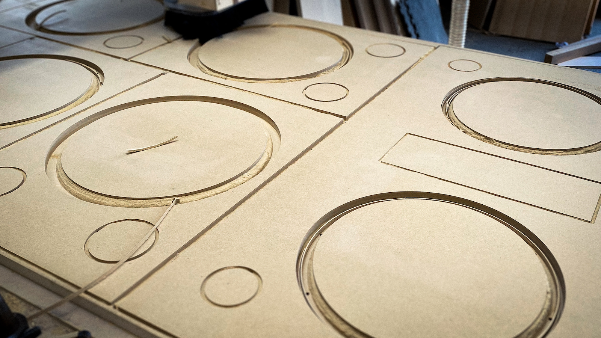

“R
ue Boyer was designed to be a truly international studio to cater to the needs of some of the most successful producers and engineers from across the world,” explains Maxime Le Guil. “Given that we had already decided on a spectacular 7.1.4 rig from Amphion, we knew the remaining choice for stereo monitoring would be between ATC and Symphonic Acoustics’ Augspurger monitors, as they are two of the finest brands of big monitors.”
“Many people work in smaller studios these days and often have small or medium ATC’s, so we opted for ATC’s for our nearfields at Rue Boyer as well. For the main monitoring system we chose Symphonic Dual 15V’s, matched with multiple custom-designed subwoofers. We’ve been incredibly happy with them.”
The decision by the MWTM team to utilise the Symphonic Dual 15V monitors immediately posed two challenges. The first was that George Augspurger only designs monitors and doesn’t actually manufacture them. The second was that monitors that size need to be designed and fitted specifically to the room.
John Storyk of WSDG, who were responsible for the design of the studio, suggested PK Pandey and Symphonic Acoustics. Carrying the exclusive licence for genuine George Augspurger monitor designs, Pandey and his company have become well-known in the audio industry as the go-to brand for Augspurger Monitors.
PK PANDEY
FOUNDER OF SYMPHONIC ACOUSTICS
Pandey’s route to this privileged position started in the mid-90s, when he began to work at Boston’s Guitar Center. In 1999, he founded the company’s professional division. In 2010, Pandey went independent and set up Symphonic Acoustics. A few years later he founded AVN/SYS, a company that installs audio and video systems in a wide variety of environments, from recording studios to content creation hubs.
“I was working on the Jungle City Studios project which was designed by WSDG,” recalls Pandey, “and John Storyk introduced me to George [Augspurger], who then authorised Symphonic Acoustics to manufacture monitors using his designs. Today we are the only licensed manufacturer for these monitors worldwide”
“George would just give studio owners a sketch from which they could manufacture the monitors.”
Symphonic Acoustics in fact manufactures a range of studio monitors and subwoofers, and it has provided custom monitors for a variety of top studios, including MBK Studios, Paul Epworth’s The Church Studios, Jungle City Studios, and Marcella Araica and Danja Hills’ Dream Asylum Studios. Designing, manufacturing and installing the main monitors in Rue Boyer Studios was another big opportunity for Symphonic Acoustics.
One thing that sets Symphonic Acoustics apart is that its Augspurger monitors are not only suitable for vibing and blasting the client, but also for detailed mixing. “Many years ago,” says Pandey, “George would just give studio owners a sketch from which they could manufacture the monitors. There was no quality control on the monitors themselves, nor on the way they were fitted in the room. This meant that many people assumed they were only meant for loud playback.”
GEORGE AUGSPURGER
GEORGE AUGSPURGER
“We’ve collaborated closely with George, and used SolidWorks Computer-Aided Design (CAD) software to model the speakers. We evaluated all the different components for the best fit, and designed the best monitors we could. We’re now providing not only authentic products that are exclusively licensed by George, but we also take his concepts a step further. Due to the modern design and components of our monitors, and the fact that they were tuned to the room, you can use them for mixing and mastering all kinds of music, and for cranking them up!”
“When we are tailoring the monitors to each studio, we don’t just sell a speaker, we want to know what the situation is in the room. If you were to just put the speakers in the room, they may not sound that great. The room and the speakers go hand in hand! The great thing about working with WSDG is that they know exactly what speakers to specify for the rooms that they design, and they also gave us their NIRO report for Rue Boyer Studio A.”
The collaboration between Symphonic Acoustics and WDSG, with input from George Augspurger, and of course the MWTM team, resulted in two exceptional main monitors and an unusual array of subwoofers.
“The monitors were hand-assembled,” says Pandey, “very meticulously, in our workshop just outside Boston. They are serious boxes! They are based on a George Augspurger-designed Duo-15 speakers with a wooden horn in the center, and an 18-inch sub underneath. Maxime and Victor pushed for oak horns, but we ended up making walnut horns for this studio.”
CRAFTING THE CABINETS
“The speakers are placed in the room exactly to WSDG specifications. Rue Boyer Studio A has a very large control room, and according to the NIRO report we needed additional subwoofers to fill out the low end. So we developed new 12-inch subwoofers to complement the main monitor system. All three subs are hidden, two to the sides, and one is placed in the back of the room, just underneath the ceiling. These subs are not part of the studio’s Atmos system.”
“The speakers we installed are an array, in that they are one object with three components: subs, mids and highs. You can EQ them and adjust the crossover network, and more. This gives more opportunities to tune the speakers. Final tuning is to personal taste. In this case, balancing those three subs with the main monitoring was pretty advanced. Installing them also was a little bit of a leap of faith on the part of the MWTM guys. You don’t often see this setup. But you can hear the difference!”
ABOUT SYMPHONIC ACOUSTICS
Currently manufacturing Exclusively Licensed Authentic Augspurger Monitoring Systems and collaborating with George Augspurger on new designs, the Symphonic Acoustics client list includes Mix with the Masters, Alicia Keys, Ann Mincieli (Jungle City Studios), Pharrell Williams, Paul Epworth, Marcella Araica, Nate “Danja Hills, Ronnie Jackson, Khari Cain, Sony Studios LA, RCA Studios LA & Atlanta, Luny Tunes, Daddy Yankee, Chris Brown, PJ Morton & more. With over 25 years of experience in recording studio AV design, engineering, fulfilment, installation, monitor manufacturing and support, Symphonic Acoustics has facilitated the end-to-end design and delivery of countless artist studios, commercial recording studios, content + podcast studios, and education studios + classrooms.
ABOUT AMPHION LOUDSPEAKERS
Amphion Loudspeakers Ltd. was established in 1998. For more than two decades, the company has been crafting some of the finest speakers and amplifiers ever built. Renowned for their sonic accuracy, inspired design and everlasting build quality, their studio monitors have become secret weapons for some of the world's best engineers and producers, including Finneas, Josh Gudwin and Rob Kinelski. Amphion strives to balance innovation with tradition, and that is why they create quality speakers that will always be ahead of their time.